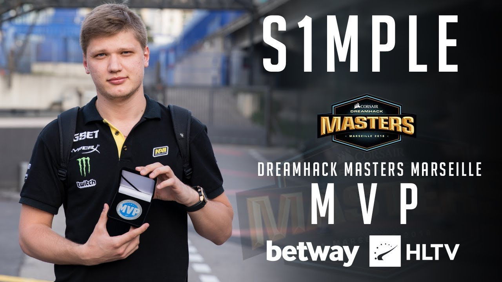

Главная
Главная
 Состав
Состав
 Автор
Автор
 Глав. Сайт
Глав. Сайт
Алекса́ндр Оле́гович Ко́стылев (s1mple)
Имя: Александр Костылев
Родился: 02.10.1997 (22 года)
Страна: Украина
Страна: Украина
Профессиональный игрок в CS:GO. Считается одним из сильнейших игроков в мире.
Начал свою карьеру в 2013 году, играя за украинскую команду LAN DODGERS. Затем побывал в Courage Gaming, Amazing Gaming и некоторых других менее заметных коллективах. В середине сентября 2014 Александр присоединился к более серьезной команде — HellRaisers, откуда уже через пять месяцев вместе с markeloff перешел в dAT Team. Последних спустя еще месяц подписала организация FlipSid3 Tactics. Из-за внутренних проблем в июле 2015 года s1mple покинул команду и сообщил, что берет паузу и какое-то время не будет играть. Однако «отпуск» был недолгим, и через несколько дней игрок вернулся в составе команды Evolution, а затем перешел в коллектив Evolution. Dark, который просуществовал всего месяц. Поиграв еще немного в команде Worst Players, Александр стал помогать своим бывшим командам, играя стендином сначала за HellRaisers, а затем за FlipSid3 Tactics.
В январе 2016 года s1mple официально присоединился к североамериканской команде Team Liquid, с которыми попал в топ-8 на MLG Major Championship: Columbus, а на ESL One: Cologne 2016 вывел команду на второе место. Именно его игра во многом способствовала успехам коллектива. В августе 2016 года Александр вернулся на родину и подписал контракт с Natus Vincere.
Интересный факт: s1mple получил бан от ESLа феврале 2014 года за использование читов и попытку обхода бана. Ровно через два года игрок был официально разбанен.